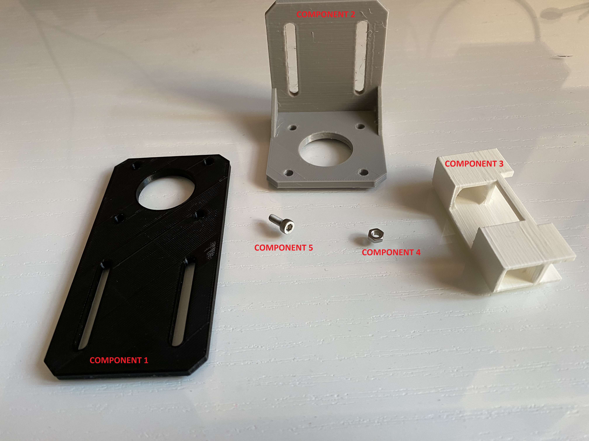
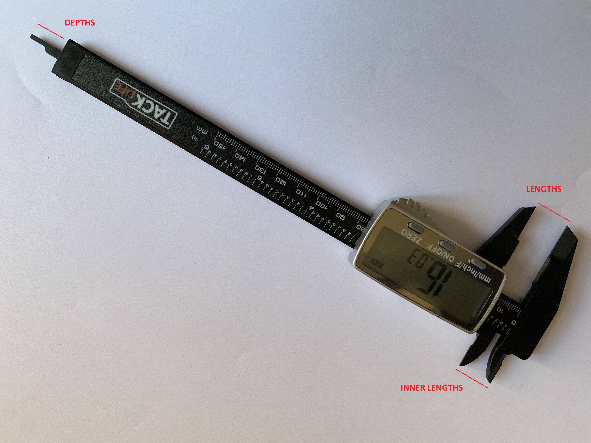
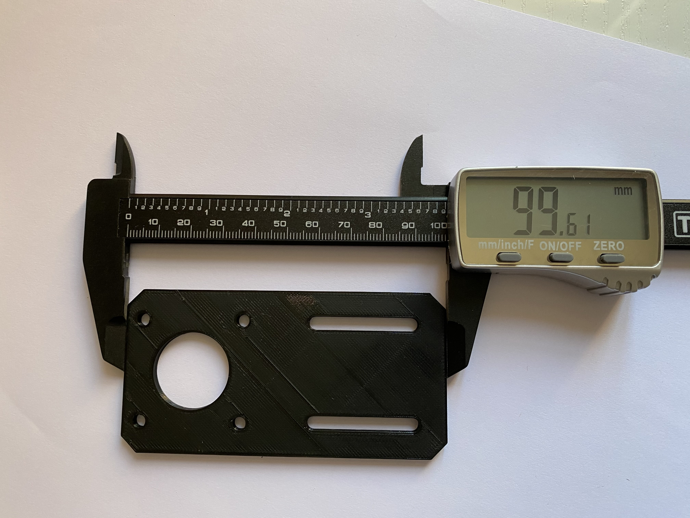
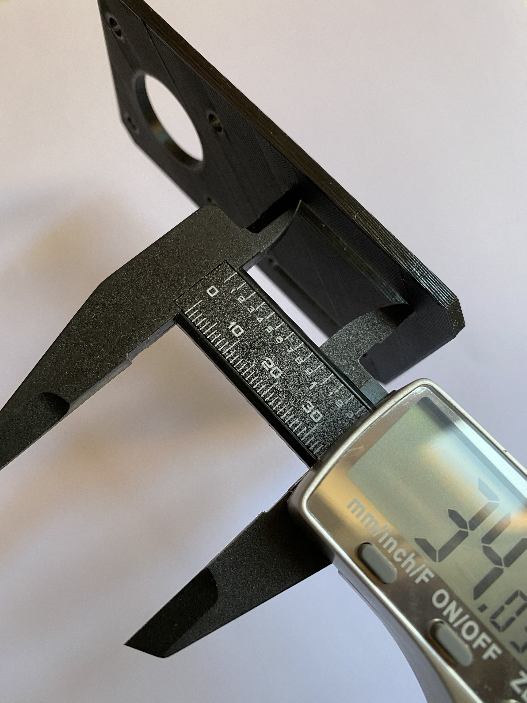
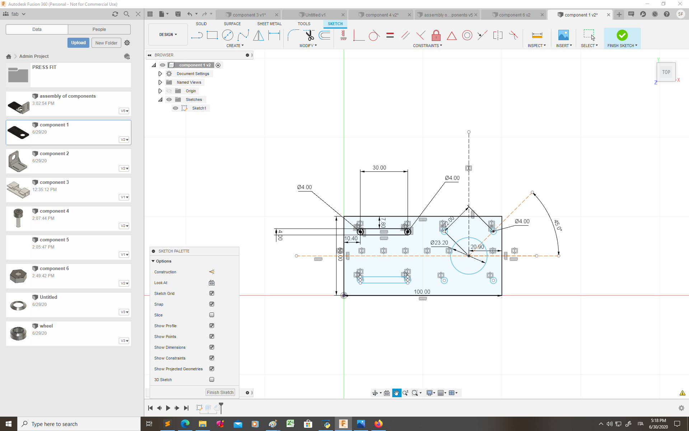
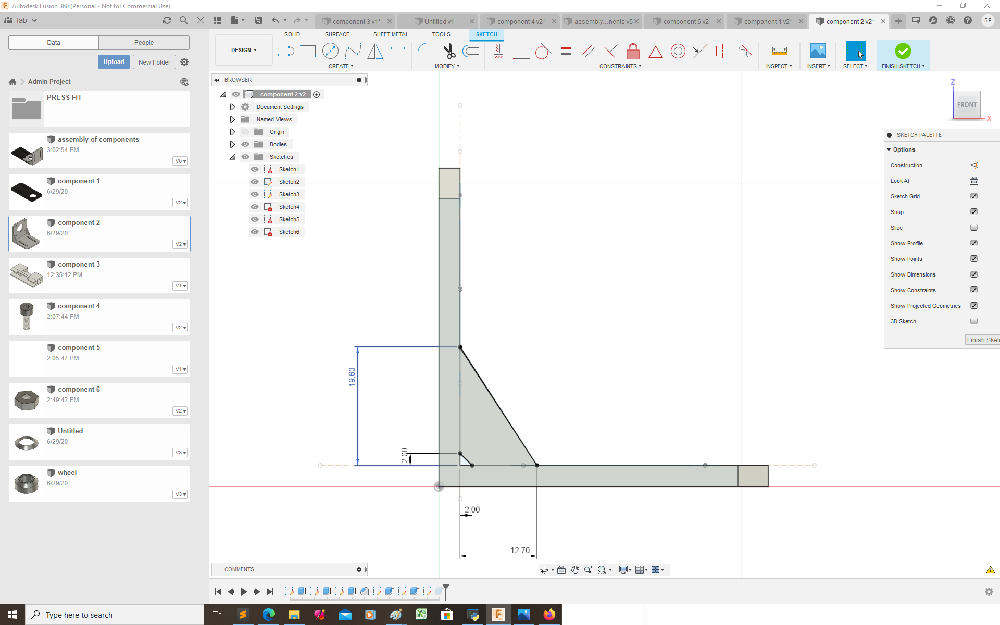
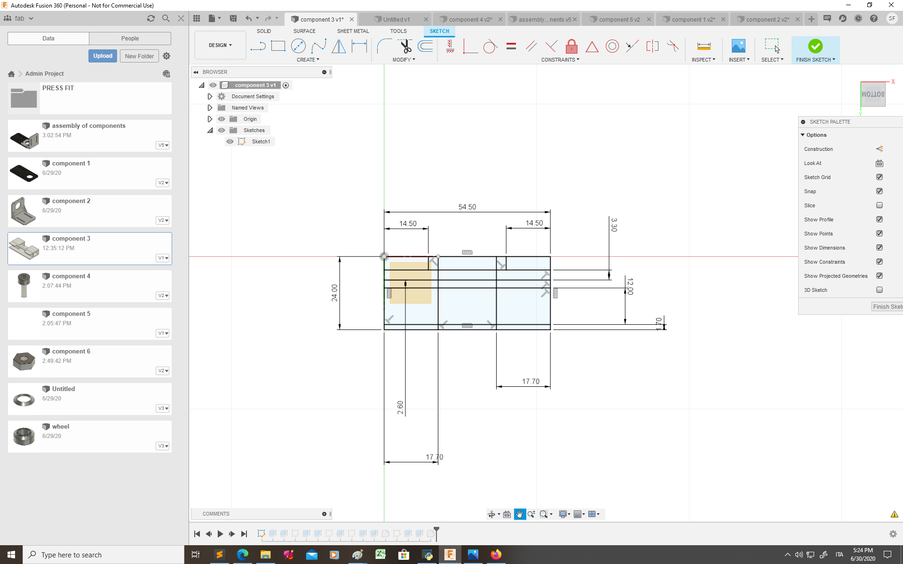
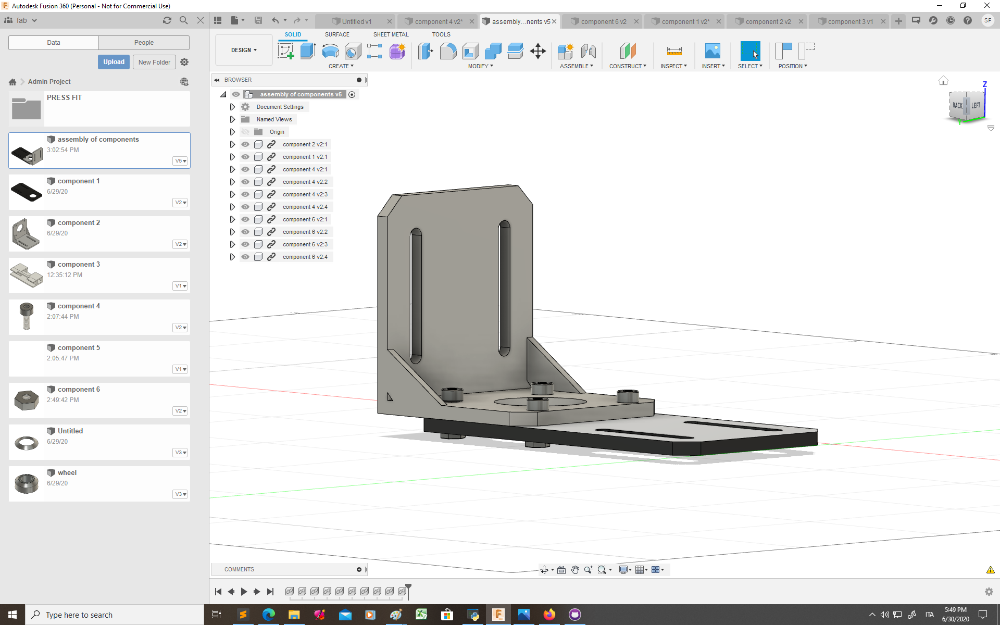
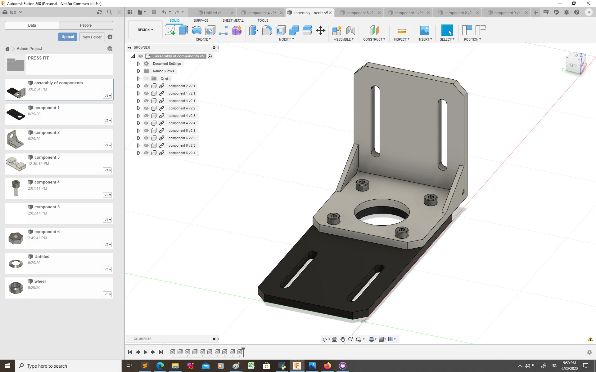
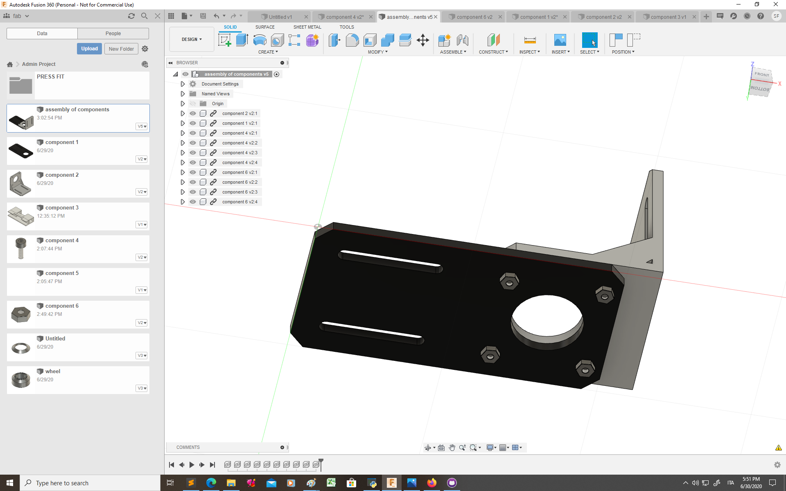

Topic 2: Designing components with Fusion 360
STEPS:
-
Choose the components you want to design
Measure with a caliber
Create sketches
-
Extrude sketches
Assembly
1) CHOOSE THE COMPONENTS YOU WANT TO DESIGN:
I have chosen to start by designing something simple as component 1 (in fact this component can be designed by extruding one single sketch) and then try something more complex as a screw.
2) MEASURING WITH THE CALIBER:
The caliber can be used to measure lengths, inner lenghts (such as the diameter of a circular hole) and depths.
Here are some examples of measures I have taken with the caliber:
 
3) CREATE SKETCHES :
After I have taken all the measures of the components I wanted to design I created the sketches on Fusion 360.
  In the previous sketches I have defined the distances inside the sketch, but it can be useful to use fixed parameters when you need to use the same measure more than once for the same component or for different components. I used parameters to design a screw and a nut.

4) EXTRUDE :
When the sketches are ready you can extrude some part in 3 dimentions to create your 3d model. Here are some models I created:

5) ASSEMBLY :
After all the components were ready I created this assembly:
  MORE COMPLEX MODELS:
To create more complex models it is possible to modify tridimentional bodies once they are extruded. I have used fillet, chamfer, combine and split body. It is also possible to repeat part of a sketch by creating a pattern. To create a more complex surface I have used "create/loft".
This is an example of a complex model I have created: